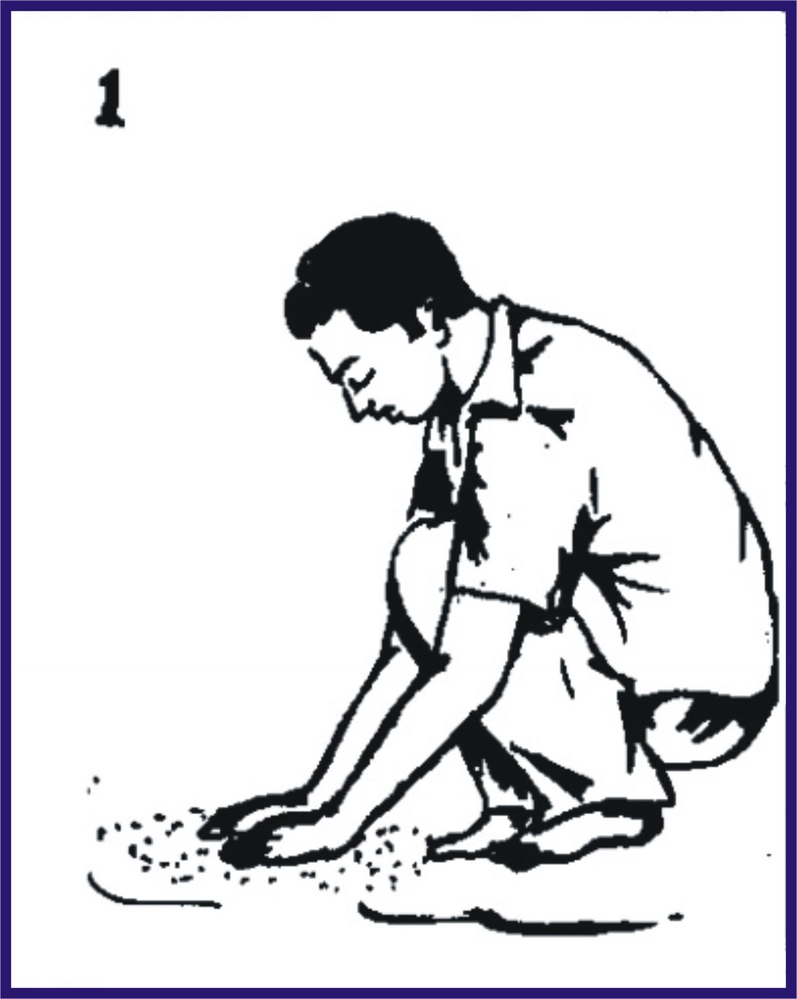
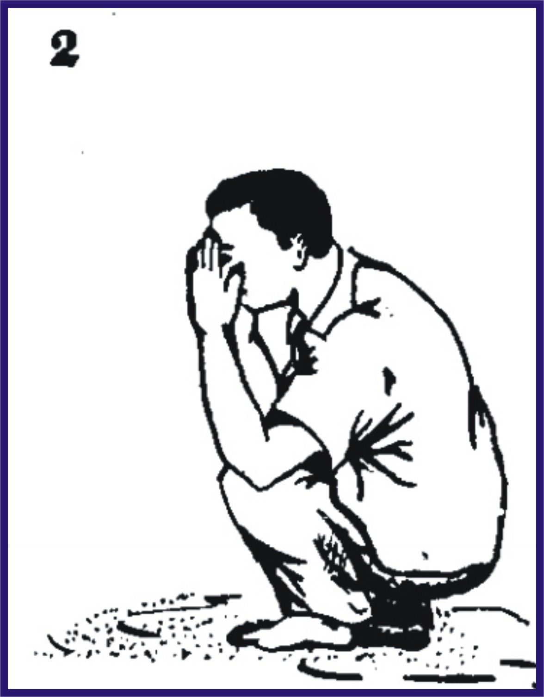
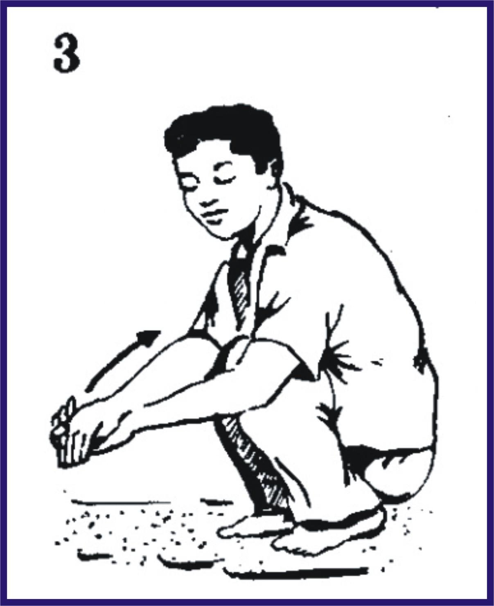

Cara melakukan tayamum
1. Membaca basmalah
2. Renggangkan jari-jemari, tempelkan ke debu, tekan-tekan hingga debu melekat.

3. Angkat kedua tangan lalu tiup telapat tangan untuk menipiskan debu yang menempel, tetapi tiup ke arah berlainan dari sumber debu tadi.
4. Kemudian berniat tayamum :

Artinya ;
Artinya ;
Nawaytuttayammuma listibaa hatishhalaati fardhollillahi ta'aala (Saya niat tayammum untuk diperbolehkan melakukan shalat karena Allah Ta'ala).
نَوَيْتُ التَّيَمُّمَ لِاِسْتِبَاحَةِ الصَّلاَةِ فَرْضً ِللهِ تَعَالَى
Nawaitut tayammuma li-istibahatis sholaati fardhal lillaahi ta'aalaa
Artinya: "Saya niat tayammum untuk diperbolehkan melakukan shalat karena Allah Ta'ala"
Artinya: "Saya niat tayammum untuk diperbolehkan melakukan shalat karena Allah Ta'ala"
5Mengusap telapak tangan ke muka secara merata

6. Bersihkan debu yang tersisa di telapak tangan
7. Ambil debu lagi dengan merenggangkan jari-jemari, tempelkan ke debu, tekan-tekan hingga debu melekat.
8. Angkat kedua tangan lalu tiup telapat tangan untuk menipiskan debu yang menempel, tetapi tiup ke arah berlainan dari sumber debu tadi.
9. Mengusap debu ke tangan kanan lalu ke tangan kiri

10. Tertib (Berurutan).
Yaitu urut dari kedua usapan tersebut (berurutan; wajah dulu kemudian kemudian kedua tangan).